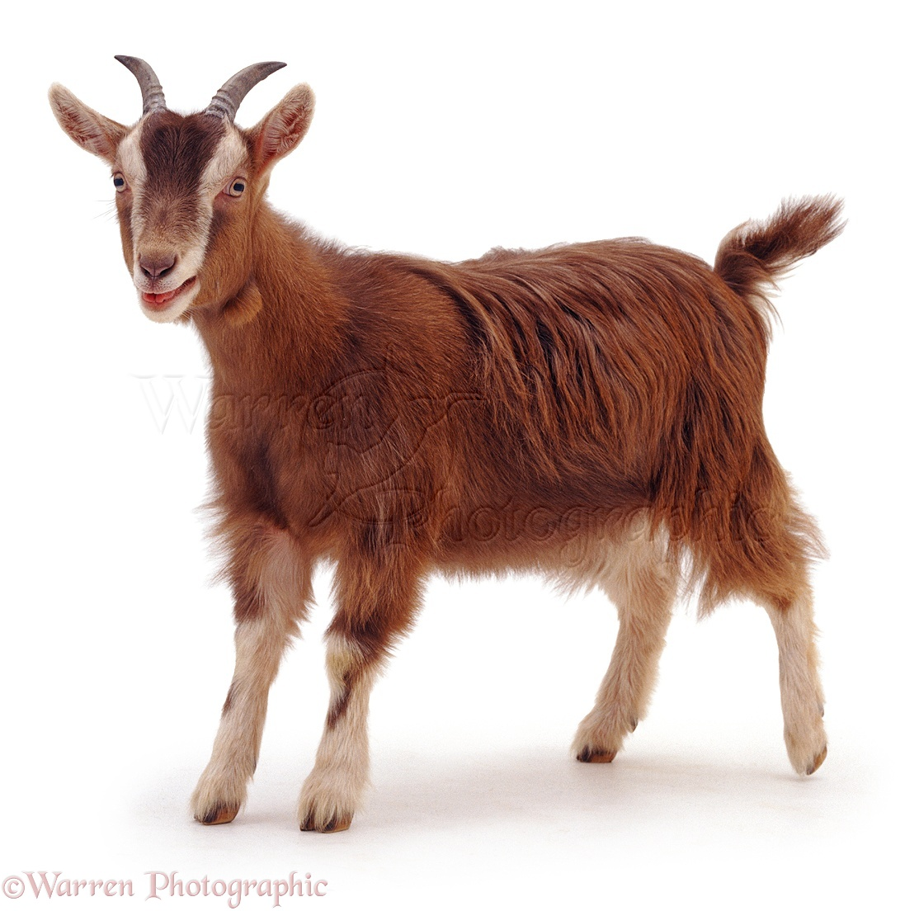
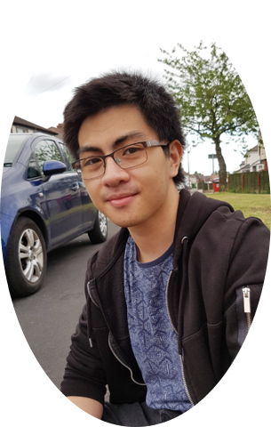
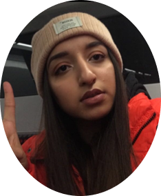

Josh Eddy |
Joseph Rolli |
Mohammad Ali Sayed Ackbar |
|
Hi everyone! I’m Josh, the group leader for this project.
I am also in charge of the IDT which deals with the whole make-up of the game in general.
I am a second year Computer Science student at Aston University, who loves 3d replica
creation, long distance running and youth work!
|
Hi! I’m Joseph, Jo for short. I am part of the UIDT alongside Adrian. I am a
second year Computer Science student at Aston University.
|
Hello, my name is Mohammad, but people call me Masa for short. I am what is
known as a floater on the team. I am a participant of both the UIDT and the IDT occasionally.
I am a second year Computer Science student at Aston University. I enjoy playing computer games,
travelling and bowling.
|
|

|
||
Hannah Miller |
James Rowntree |
Adrian Wong |
|
Hey! I’m Hannah. I am the team leader for the WDMRT, we deal with the creation and
the management of the Strategic Goats/Peril blog and website. We are also responsible for any
documents which are to be handed in alongside the game submissions. I am a second year Computer Science student at Aston University.
I’m part of the university cheerleading team, I like to cook and create websites obviously!
|
Hi, my name’s James. I am part of the WDMRT alongside Hannah.
I am a second year Computing for Business student at Aston University. I have recently
moved from the IDT where I improved my Java knowledge to the WDMRT to pass on any business
knowledge and help them understand the technical side of the project a-bit more.
I enjoy gaming, going to festivals and socialising.
|
Hi, my name is Adrian. I am the team leader for the UIDT, we deal
with how the game looks for you guys and how you would interact with it. I am a second
year Computer Science student at Aston University, who enjoys playing sports, computer
games and lives for the sesh!
|
|

|

|
|
Ezekiel Trinidad |
Gurdeep Pol |
Nikita Mahay |
|
Hi guys, my name is Ezekiel, but you can call me Zeke 😉.
I am a team member of the IDT alongside Josh. I am a second year Computer Science
student at Aston University. I enjoy playing video games, boxing and drawing in my spare time.
|
Hi, I’m Gurdeep. I am part of the WDMRT alongside Hannah. I am a second year
Computer Science student at Aston University. I enjoy creating elements to be featured in the
game or the website, I even created our team logo 😉. My hobbies and interests to name a few are:
going to the gym, playing and watching Basketball/American Football and photography/cinematography.
|
Hello, I’m Nikita, Nik for short. I am part of the UIDT alongside Adrian.
I am a second year Computer Science student at Aston University, I love learning languages,
eating great food and cycling.
|